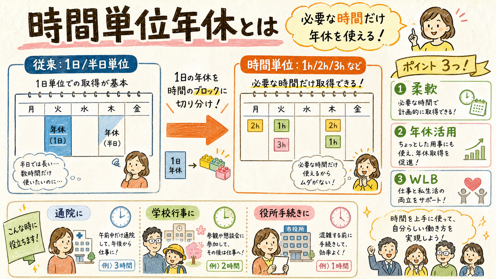
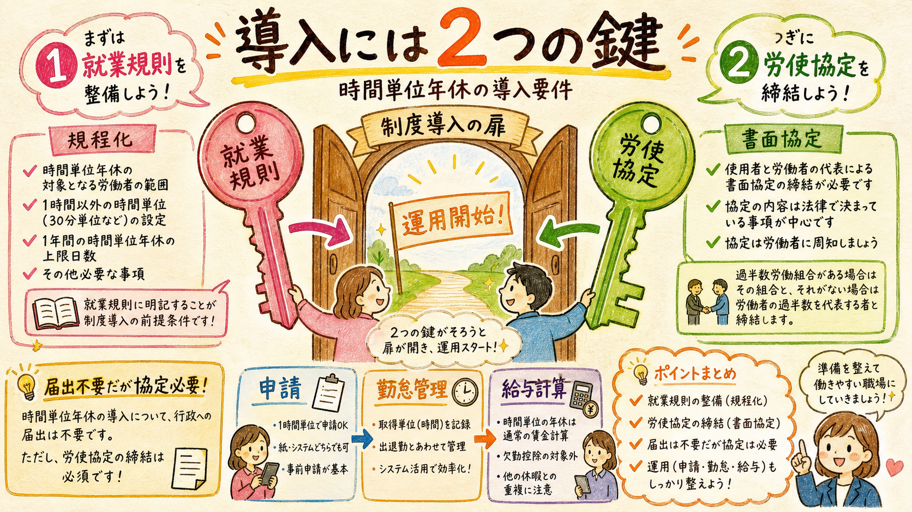
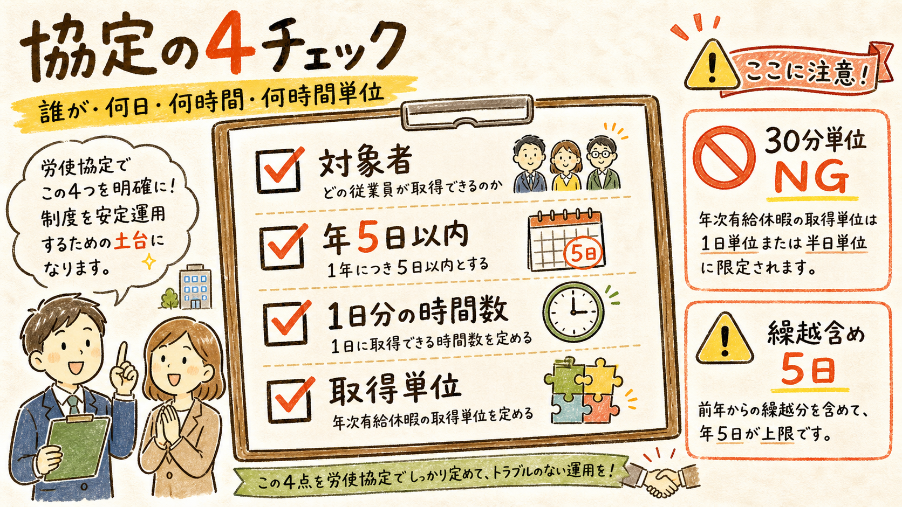
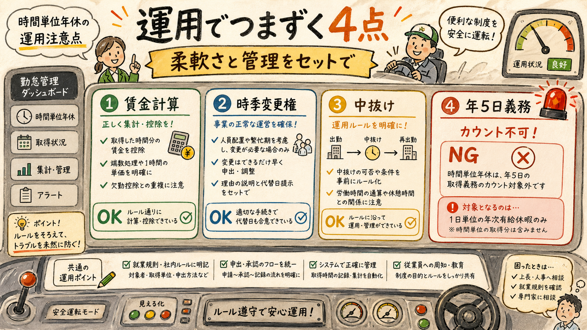

CLIENT EXPLAINER
時間単位年休を
導入前に押さえる4つの要点
制度概要・導入要件・協定記載事項・運用上の注意点を1枚に整理しました。顧問先説明や社内検討でそのまま使いやすいよう、メリットと落とし穴を分けて整理しています。
TL;DR
- 導入には就業規則の規定と、書面による労使協定が必要です。
- 時間単位で取得できる年休日数は、繰越分を含めても年5日以内です。
- 時間単位年休は柔軟な制度ですが、年5日の取得義務にはカウントできません。
01制度概要 — 1日休むか、時間で休むか
年次有給休暇を、通院・学校行事・役所手続きなどに合わせて短時間で使えるようにする制度です。

時間単位年休制度は、労働基準法39条4項に基づき、年次有給休暇を1時間単位で取得できるようにする制度です。平成22年改正により、ワーク・ライフ・バランスを図る仕組みとして導入されました。
ポイントは「年休の新しい付与」ではなく、「既に付与された年休の使い方を時間単位にも広げる」ことです。
| 利用場面 | 時間単位年休の使い方 | 実務上の見え方 |
|---|---|---|
| 通院 | 午前に2時間だけ取得 | 丸1日休むほどではない用事に対応しやすい |
| 学校行事 | 午後に3時間だけ取得 | 育児・家庭事情との両立を支援しやすい |
| 行政手続き | 窓口時間に合わせて1〜2時間取得 | 年休消化の心理的ハードルを下げやすい |
02導入要件 — 就業規則と労使協定が入口
制度を使えるようにするには、社内ルール化と労使の書面合意をセットで整えます。

| 要件 | 定める内容 | 注意点 |
|---|---|---|
| 就業規則 | 対象者、1日分の時間数、取得単位など | 従業員に見える社内ルールとして整える |
| 労使協定 | 対象範囲・上限日数・1日分の時間数・取得単位 | 労基署への届出義務はない |
| 運用設計 | 申請方法、残時間管理、賃金計算方法 | 勤怠システム・給与計算と連動させる |
労使協定の届出義務がないからといって、協定自体が不要になるわけではありません。導入時は書面で残すことが前提です。
03労使協定の4項目 — ここを外すと運用が崩れる
対象者、上限日数、1日分の時間数、取得単位の4つを明確にします。

| 協定事項 | 実務上の意味 | NGになりやすい例 |
|---|---|---|
| 対象労働者の範囲 | 原則は全労働者。業務性質上困難な者を除外する余地あり | 「育児中の人だけ」など取得目的で制限する |
| 時間単位年休の日数 | 年5日以内。繰越分を含めても上限5日 | 繰越分を別枠として5日超にする |
| 1日分の時間数 | 所定労働時間を基準。1時間未満端数は切上げ | 7時間30分を7.5時間のまま扱う |
| 取得単位 | 1時間以上の単位。2時間単位などは可 | 30分単位など1時間未満にする |
所定労働時間が7時間30分の場合、時間単位年休の1日分は8時間として扱う、という端数処理が重要です。
04運用注意点 — 便利さと管理リスクを分ける
賃金、時季変更権、中抜け、年5日義務の扱いは、導入時に必ず説明しておきたい領域です。

| 論点 | 客観整理 | 実務メモ |
|---|---|---|
| 賃金計算 | 平均賃金・通常賃金・標準報酬日額等の方法で計算 | 給与計算ルールと勤怠控除/支給項目を合わせる |
| 時季変更権 | 正常な事業運営を妨げる場合は変更可能 | 時間請求を一日年休へ変更命令することはできない |
| 中抜け | 就業時間の中途取得を制限できない | 申請フローと勤怠打刻ルールで管理する |
| 年5日義務 | 時間単位取得分は年5日の取得義務にカウント不可 | 別途、1日または半日単位での取得管理が必要 |
「時間単位で細かく取らせているから年5日義務も満たせる」と整理すると危険です。時間単位年休は年5日取得義務の日数に算入できません。
結論
- 導入判断では、柔軟な働き方支援というメリットと、勤怠・給与・年5日義務管理の手間をセットで説明する。
- 規程・協定では、対象者、上限5日、1日分の時間数、取得単位を明確にする。
- 運用開始前に、申請フロー、残時間管理、賃金計算、年5日義務の別管理を確認する。